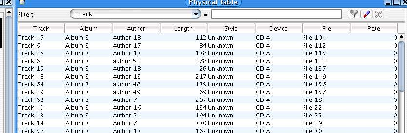

Playing music
General play modes
Before launching tracks, you can set default Jajuk behavior in the
command view :
|

Fig. 01 : Modes
|
1- Repeat mode : if set, selection will be played in loop
2- Shuffle mode : if set, selection will be played randomly
3- Continue mode : if set, tracks after selection will be played when
selection is done
4- Introduction mode : if set, only a part of each track will be played
( begin position and play time can bet set in the parameter view )
|
Note these modes are token into account only if you launch
tracks with the "Play" command. You can always overwrite
these modes launching tracks with "Play repeat"or "Play
shuffle" option.
The "Push" command you
will find in most menus allows you to push the selection in the queue
: it means the tracks you push will be played when previous selection
is over. You can browse the queue using the special playlist "Queue"
( See fig. 02 ) :

Fig.02 : Queue
Special functions
To avoid selecting tracks, you can use these high-level special
functions from command panel or tray :
 Play shuffle: launch a shuffle track from the entire collection (only
from mounted and ready devices).
Play shuffle: launch a shuffle track from the entire collection (only
from mounted and ready devices).
 Play best of: launch one of your favorite track (learned with dynamic
rate) and with a bit of random.
Play best of: launch one of your favorite track (learned with dynamic
rate) and with a bit of random.
 Play novelties: launch one of newest tracks from your collection with
a bit of random.
Play novelties: launch one of newest tracks from your collection with
a bit of random.
 Continue album: Useful when using shuffle mode and you find an album
that you want to play. This function finish to play current album.
Continue album: Useful when using shuffle mode and you find an album
that you want to play. This function finish to play current album.
Selecting tracks to play
- Select physical or logical perspective (see perspectives and views chapter)
- Select one or more tracks to play. There are many ways to select a track :
Using physical or logical tree view

Fig.04 : Selecting tracks with tree view
In physical perspective :
- Select one or more files or directories
In logical perspective :
- Select one or more styles, authors, albums or tracks
Launching items :
You can :
- Right click on your selection, a popup menu will appear. Then select 'play' or another command ( play
repeat, play shuffle, push )
- Drag and drop selection (only one item) to the queue playlist ( see fig. 02 )
- Double-click on a selected item
Using physical or logical table view

Fig.05 : Selecting tracks with table view
In physical perspective :
- Select one or more files (each row is a file). Use Shift key to perform multiple selections.
In logical perspective :
- Select one or more tracks (each row is a track). Use Shift key to perform multiple selections.
Launching items :
You can :
- Right click on your selection, a popup menu will appear. Then select 'play' or another command (play
repeat, play shuffle, push)
- Drag and drop selection (only one item) to the queue playlist (see fig. 05)
- Double-click on a selected item
Using command view

Fig.06: Selecting a track with command view
Using search box
The search box allows you to find any file, track,
style, author, album... for a given text. A result popup appears.
Then launch wanted track clicking on the list.
Using history bar :
The history bar shows all tracks you
played (can be cleared and configured in the parameter view). Click
one track to launch it again.
Controlling player (play, pause, volume...)
 Mute : stop/start the sound
Mute : stop/start the sound
Previous
Track : Listen previous track in collection
 Next track :
Listen next track in selection
Next track :
Listen next track in selection
 Fast rewind in current track
Fast rewind in current track
 Play / Pause current track
Play / Pause current track
 Stop playing. Playing. Queue is cleared
Stop playing. Playing. Queue is cleared
 Fast forward in current track
Fast forward in current track
 Volume (slider). Note that volume is saved and reset automaticaly at
next Jajuk startup. You can change volume with the mouse wheel over tray popup as well.
Volume (slider). Note that volume is saved and reset automaticaly at
next Jajuk startup. You can change volume with the mouse wheel over tray popup as well.
 Position in current track (slider). Note that current track position is
saved and startup track can restart to this position if you check the
"Last track at last position" startup mode in Parameter View / startup.
Position in current track (slider). Note that current track position is
saved and startup track can restart to this position if you check the
"Last track at last position" startup mode in Parameter View / startup.